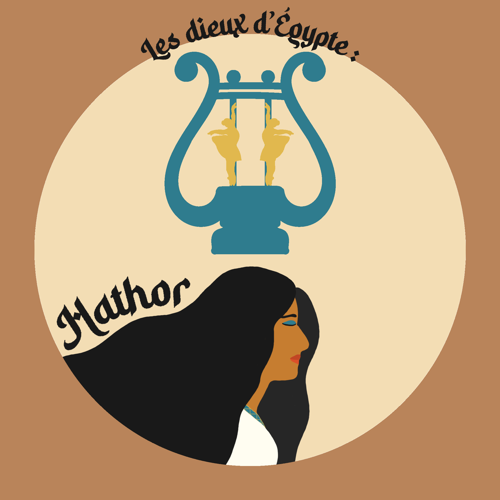
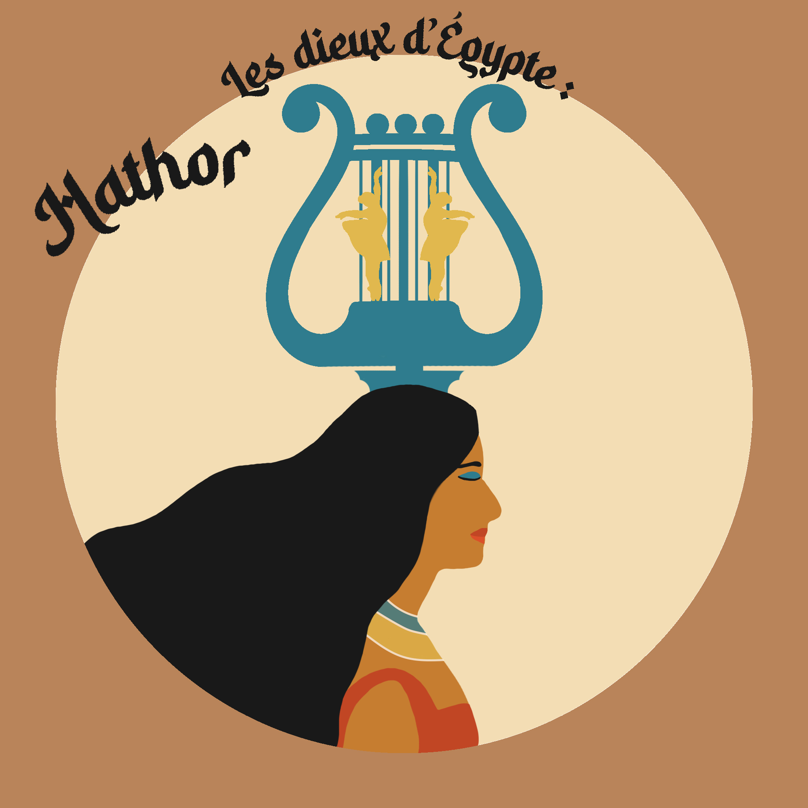

Illustration originale de la déesse égyptienne, mêlant symbolisme ancien et esthétique contemporaine inspirée des vinyles.
J'ai assuré la direction artistique et la conception complète de ce projet, réalisé dans le cadre de mon cours de Design 2.

